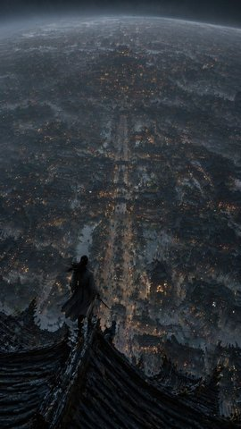
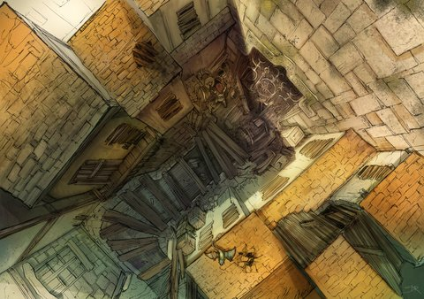

baselines
原图 / 风格参考（Absolute-5D 同尺）
原图 Baseline · night_city
原图 Baseline

7.80良好
原图·0轮
构图 9.25 · 光影 7.5 · 透视 6.75 · 质感 6.75 · 风格 8.75
中远景建筑结构偏模糊，局部屋顶轮廓含混；人物脚部与屋脊的接触关系不够清晰；远处灯光与建筑细节略显重复、松散
style_ref_01_night_city.png
原图 Baseline · pastel_sketch
原图 Baseline
7.79良好
原图·0轮
构图 8.5 · 光影 7.5 · 透视 6.0 · 质感 8.25 · 风格 9.25
右侧鞋子被画面截断；手指及双腿交叠处结构略含糊；接触阴影较弱
style_ref_02_pastel_sketch.png
原图 Baseline · sunlit_portrait

原图 Baseline
8.30良好
原图·0轮
构图 9.25 · 光影 8.25 · 透视 7.75 · 质感 5.75 · 风格 10.0
整体细节偏软，头发和衣物纹理不足；暗部面部与衣领区域层次较弱；肩颈和衣领结构略显模糊
style_ref_03_sunlit_portrait.png
原图 Baseline · ishtar_canyon
原图 Baseline

7.06良好
原图·0轮
构图 6.75 · 光影 8.25 · 透视 5.75 · 质感 7.5 · 风格 7.5
C1/C6：缩小后墙面、阶梯与中央装饰挤成密集线块，主焦点不够突出。；C3/C5：强烈倾斜与多向斜线争夺注意，空间层次和视线路径不够清晰。；L1/L6：局部亮面与整体入光方向对应不足，阶梯及构件接缝的接触阴影偏弱。
web_ref_01_concept_ishtar.png